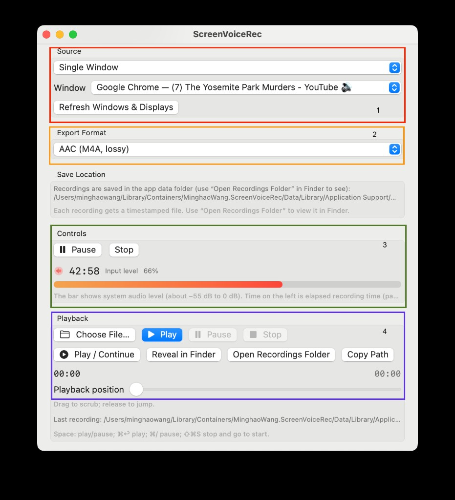

Screen Audio Recorder for macOS | Enregistreur audio d’écran pour macOS

ScreenVoiceRec captures audio on your Mac and saves it as a file you can play back or share. You can record:
The main window is divided into four areas (numbered in the screenshot above).
ScreenVoiceRec capture l’audio sur votre Mac et l’enregistre dans un fichier que vous pouvez écouter ou partager. Vous pouvez enregistrer :
La fenêtre principale comporte quatre zones (numérotées sur la capture d’écran ci-dessus).
Choose what to record.
Choisissez quoi enregistrer.
Select the file format before you start recording. Available formats:
The extension is chosen automatically (.m4a, .caf, or .wav).
Choisissez le format de fichier avant de commencer l’enregistrement. Formats disponibles :
L’extension est choisie automatiquement (.m4a, .caf ou .wav).
Between Export Format and Controls, the app shows where files are saved — inside the app’s sandbox folder under Library/Application Support/. Each recording gets a timestamped filename. Use Open Recordings Folder (in Playback) to open the folder in Finder.
Entre le format d’exportation et les commandes, l’application indique où les fichiers sont enregistrés — dans le dossier sandbox de l’app, sous Bibliothèque/Application Support/. Chaque enregistrement reçoit un nom horodaté. Utilisez Ouvrir le dossier d’enregistrements (section Lecture) pour l’ouvrir dans le Finder.
Manage the active recording session.
Status row: red waveform icon, elapsed time (e.g. 42:58), and Input level percentage.
Level meter: horizontal bar showing live audio level (roughly −55 dB to 0 dB). If the bar stays empty, check the source, volume, and permissions.
Gérez la session d’enregistrement en cours.
Barre d’état : icône de forme d’onde rouge, durée écoulée (p. ex. 42:58) et pourcentage de niveau d’entrée.
Indicateur de niveau : barre horizontale montrant le niveau audio en direct (environ −55 dB à 0 dB). Si la barre reste vide, vérifiez la source, le volume et les autorisations.
Listen to recordings and manage files without leaving the app.
Playback position slider — drag to scrub; release to jump to that time. Current and total duration appear on the left and right.
Last recording shows the path of the most recently saved file.
Écoutez vos enregistrements et gérez les fichiers sans quitter l’application.
Curseur Position de lecture — faites glisser pour parcourir ; relâchez pour sauter à ce moment. La durée actuelle et totale s’affichent à gauche et à droite.
Dernier enregistrement affiche le chemin du fichier le plus récent.